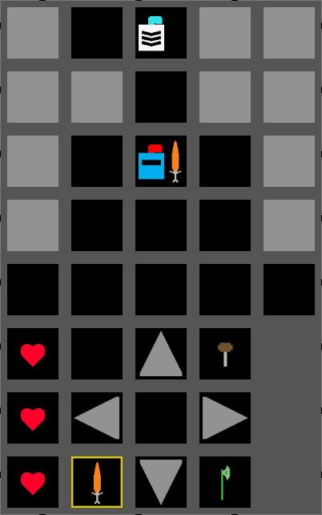
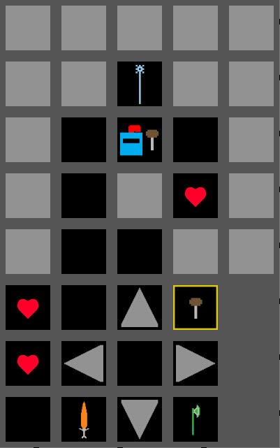

Simplified Pokémon Mystery Dungeon with a fantasy theme.
Genre:
Top-Down Dungeon Crawler.
Platform:
Desktop and mobile-friendly.
Story:
Your character progresses deeper into a dungeon in search of wealth and glory.
A tense mood hangs over the game, since you can't see very far ahead of you.
Anything could be lurking just out of sight.
The player explores a floor of the dungeon until they find the stairway to descend further.
Upon reaching the bottom floor, the player faces a boss monster and either wins or loses.
The player can seek out items hidden in the dungeon to improve their abilities in combat. The player can try to finish the game as fast as
possible.
Aesthetics:
Graphics:
Simple, minimalist graphical style.
Graphics:
Sound effects for dealing / receiving damage, finding an item, losing or winning the game.
Gameplay:
Mechanics:
The dungeon is based on a square tile system.
The player can move to an adjacent tile in any of the four cardinal directions, if there is a tile to move to.
The player can move onto a tile containing an item to pick it up.
The player can move onto a tile occupied by an enemy to battle it.
Combat occurs automatically.
The player can click an onscreen button to swap their equipped item. This can make combat easier or
harder depending on the opponent.
Controls:
Keyboard and mouse for desktop. (WASD)
Touch with onscreen buttons for mobile.
Teaching the Game:
The first floor of the dungeon is largely linear. It teaches movement, item collecting, combat, and descending to further floors, one at a time. Some tips are displayed on the start screen as well.
Player Learning:
To play the game, the player must learn to move, pick up items, and attack enemies.
Beating the game requires some strategy to find the best items to use against different enemies.
To get a fast time, the player will need to be able to do all of this quickly and efficiently.
For example, the player must defeat a fire knight to proceed. They could attack with their current item, a regular sword, but they would have much greater success by exploring a side path to find the Ice Staff. This item deals much more damage to the fire knight, and allows the player to avoid taking damage entirely.
Screenshots:
 Here the player is visible near the bottom, and an enemy knight is visible near the top.
 Here the player is standing adjacent to an item, the Ice Staff.
Other:
The game exists in a square frame to add to the claustrophobic mood, and to improve compatibility with mobile devices playing in portrait mode.
About the Developer:
Kyle Weekley
2nd Year Game Design and Development student at RIT
I like programming and love game design. Aligning code with the strange workings of the human brain to
create a compelling experience has always fascinated me.